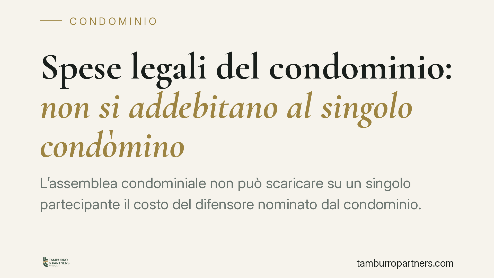

Spese legali del condominio: non si addebitano al singolo condòmino
L'assemblea condominiale non può scaricare su un singolo partecipante il costo del difensore nominato dal condominio. In assenza di una condanna giudiziale che individui il soggetto obbligato, la spesa legale resta un onere comune, da ripartire in base alle quote millesimali. Un principio che incide sulla formazione del bilancio e sulla validità delle delibere di riparto.

Il caso
Accade spesso che, al termine di una lite, l'assemblea cerchi di far gravare l'intera parcella del legale su un solo condòmino: quello ritenuto "all'origine" del contenzioso, oppure quello risultato soccombente in un giudizio contro il condominio.
La giurisprudenza di merito ha più volte chiarito che questa prassi non trova fondamento normativo. Il compenso del difensore incaricato dal condominio è una spesa comune: va ripartita tra tutti i partecipanti secondo i millesimi, salvo che un provvedimento del giudice individui diversamente il soggetto tenuto a sopportarla.
Inquadramento normativo
La regola di base è l'art. 1123 c.c.: le spese necessarie per la conservazione e il godimento delle parti comuni, nonché per i servizi nell'interesse comune, sono sostenute dai condòmini in misura proporzionale al valore della proprietà di ciascuno. Le deroghe a questo criterio sono tassative e non possono essere introdotte con una semplice maggioranza assembleare che decida di "punire" un singolo.
L'addebito individuale del costo del difensore presupporrebbe un titolo giudiziale. È l'art. 91 c.p.c. a disciplinare la condanna alle spese secondo il principio di soccombenza: solo il giudice, con la sentenza, può stabilire chi deve rimborsare le spese di lite e in che misura. Fuori da questo perimetro, l'assemblea non ha il potere di attribuire a un condòmino un onere che la legge qualifica come comune.
Va inoltre ricordato che le obbligazioni condominiali hanno natura parziaria e non solidale: ciascun partecipante risponde pro quota, in proporzione ai propri millesimi (Cass., Sez. Un., n. 9148/2008). Parlare di spesa "solidale" è dunque improprio.
Spesa comune e somma da condanna: due piani distinti
È essenziale non confondere due situazioni diverse.
Da un lato c'è la parcella del legale che il condominio paga al proprio difensore: è un costo del condominio, quindi comune, da ripartire per millesimi.
Dall'altro c'è la somma che un condòmino deve versare perché una sentenza lo ha condannato: in questo caso l'obbligo nasce dal provvedimento del giudice ed è a carico esclusivo del soggetto indicato nel titolo. Solo qui l'importo grava sul singolo, ma non per effetto di una delibera assembleare, bensì della pronuncia giudiziale.
La delibera che, in assenza di un titolo, accolla a un condòmino l'intera spesa del difensore comune è viziata e può essere impugnata.
Implicazioni pratiche
Per l'amministratore, la conseguenza operativa è duplice.
Il bilancio e i piani di riparto devono imputare la parcella del difensore tra le spese comuni, con criterio millesimale, salvo diversa statuizione del giudice.
Per il condòmino destinatario di un addebito individuale non supportato da sentenza, si apre la possibilità di contestazione. L'art. 1137 c.c. fissa in trenta giorni il termine per impugnare la delibera: termine che decorre dalla comunicazione del verbale per gli assenti e dalla deliberazione per i dissenzienti. Decorso tale termine, la delibera diventa di norma inoppugnabile per i vizi di annullabilità.
Cosa fare in concreto
- Verificare il titolo. Prima di accettare un addebito individuale, controllare se esiste una sentenza che condanna nominativamente il condòmino alle spese: senza di essa, l'onere resta comune.
- Esaminare il verbale di assemblea. Individuare con precisione cosa è stato deliberato e secondo quale criterio di riparto è stata imputata la parcella del legale.
- Rispettare i termini dell'art. 1137 c.c. Se la delibera appare viziata, agire entro trenta giorni dalla comunicazione o dalla deliberazione, in base alla propria posizione.
- Impostare correttamente il bilancio. Nei documenti contabili, collocare il compenso del difensore comune tra le spese generali ripartite per millesimi.
- Distinguere le voci. Tenere separate, anche nella rendicontazione, la spesa comune del difensore e le somme dovute da singoli condòmini in forza di provvedimenti giudiziali.
---
Contributo informativo a cura di Tamburro & Partners Avvocati – Avv. Giuseppe Tamburro. Non costituisce parere legale.
Ogni condominio ha una storia a sé.
Se gestisci un'amministrazione e vuoi un confronto su una specifica questione condominiale, scrivi allo studio. Ti rispondiamo entro un giorno lavorativo.